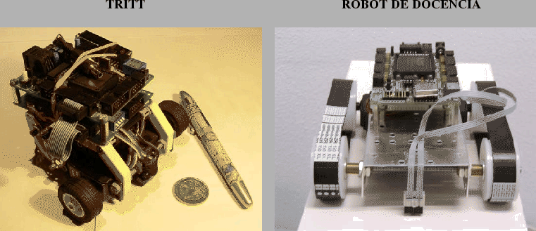
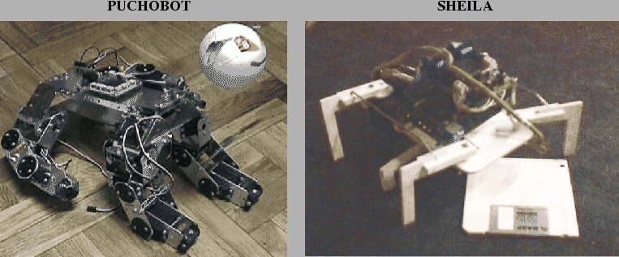

En la robótica existen dos grandes áreas: manipulación y Locomoción. La manipulación es la capacidad de actuar sobre los objetos, trasladándolos o modificándolos. Esta área se centra en la construcción de manipuladores y brazos robóticos. La locomoción es la facultad de un robot para poder desplazarse de un lugar a otro. Los robots con capacidad locomotiva se llaman robots móviles.
Dentro de la locomoción hay tres puntos claves:
La complejidad depende del tipo de robot. Es muy sencillo que un robot con ruedas avance en línea recta, pero no es tan sencillo que lo haga un robot con patas.
Nuevamente depende del tipo de robot. El hacer que un robot ápodo pueda desplazarse por un plano es más complejo que en un robot con ruedas.
Que el robot sepa qué camino elegir para llegar a un determinado lugar.
![[*]](crossref.png) ), tiene tres ruedas,
dos motrices y una loca.
), tiene tres ruedas,
dos motrices y una loca.
|
 |
),
desarrollado en la EPS de la UAM.
), o como el Hexápodo Sheila[4]
(figura ).
|
 |
.
Según cómo se realice la locomoción, existen dos tipos:
El robot debe tener suficientes puntos de apoyo, que conforman el polígono de apoyo. El centro de gravedad (CG) debe caer siempre dentro de este polígono.
El robot tiene que ser estable en movimiento (no caerse) aunque puede no ser estable en reposo (ejemplo, un robot unípodo). Este tipo de locomoción requiere más control pero aporta mayor velocidad.
width
En este trabajo nos centraremos en la locomoción estáticamente estable aplicada a un robot ápodo, que no usa ni ruedas, ni orugas, ni patas para desplazarse. El movimiento se restinge al desplamiento en línea recta.
width